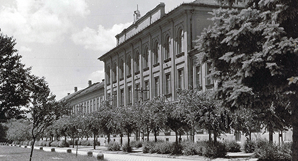
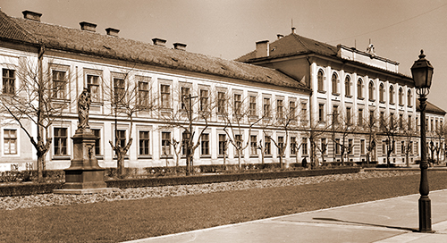
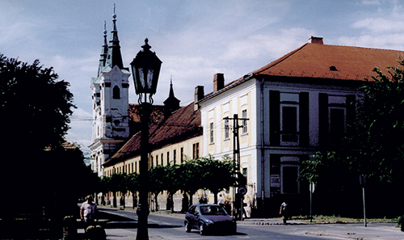
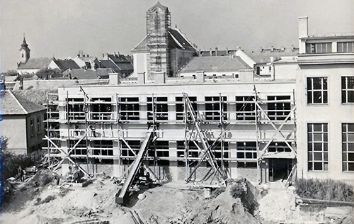
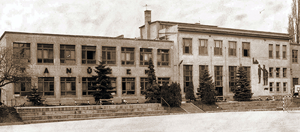
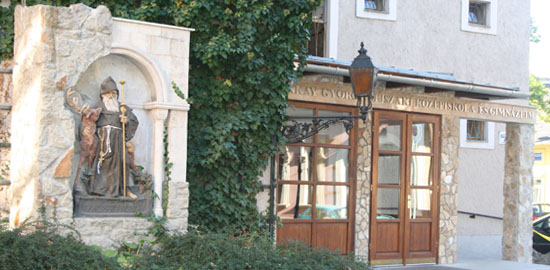
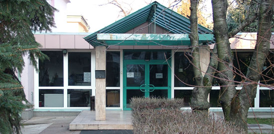
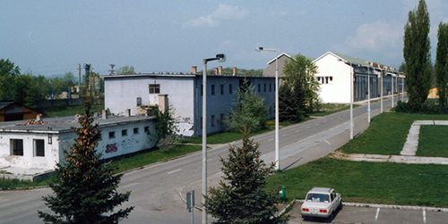
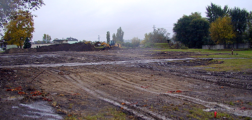
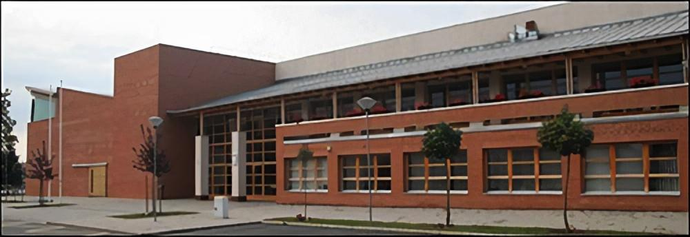

Az iskola története
A kezdetektől a rendszerváltásig
Iskolánk első otthonaAz iskola jogelődjeként 1950. augusztus 15-én alakult meg a Váci Állami Gimnázium Ipari Gimnáziumának általános gépészeti tagozata 21. számú Általános Gépészeti Technikum névvel. A gimnázium és a hozzá tartozó diákotthon (kollégium) a Piarista Rend váci épültében kapott helyet a Konstantin téren. Önálló tantestülete az iskolának az első tanévben még nem volt. A szakmai gyakorlati oktatás tanműhely és felszerelés hiányában csak 1951 januárjában indult meg az iskola alagsorában.
A régi Konstantin téri épület1951. október 1-jén a technikum önállósult és új neve 8. számú Gépipari Technikum lett. Az újabb osztályok indításával azonban elviselhetetlen zsúfoltság lett az épületben, ezért az 1952 nyarán államosított váci Püspöki Hittudományi Intézet épületébe költöztették a gimnáziumot. 1952-ben a lebontott városi mozi helyén, közvetlenül a Konstantin téri épülettel szemben (a mai Piarista utcában) felépítették a tanműhelyt. 1955-ben az iskola felvette Lőwy Sándor nevét.
A régi iskola és kollégiumAz 1956. október 23-án kezdődött budapesti forradalom után Gyalmos János akkori igazgató átmenetileg felfüggesztette a tanítást és a diákotthonban menedéket nyújtottak a váci fegyházból kiszabadult politikai foglyoknak és a fegyveres szabadságharcosok egy csoportjának is. 1966-ra elkészítették a tanműhely toldaléképültét, melyet szinteltolásosan tudtak csak kivitelezni. Ekkor az épület felvette a Tanüzem nevet.
Az épülő tanüzemA 60-as évek végétől a megyei iparvállalatokkal bérmunka-tevékenység alakult ki. 1975-ben a Váci Városi Tanács osztályvezetőjét, Molnár Lajost nevezték ki igazgatónak, aki ezután egészen 2006-ig, 31 éven át vezette az iskolát. Még ugyanebben az évben került kialakításra az iskola könyvtára a díszterem mögötti kihasználatlan területen. A leánytanulók aránya – lévén, hogy műszaki iskoláról van szó – a 80-as évek elején 10% körüli volt.
Tanüzem 1972-ben1982-re a klasszikus fémipari képzések mellett megjelent a műszer- és villamosipari szakképzés. 1989-ben megtörtént a tanüzem bővítése tetőtérbeépítéssel. Itt került kialakításra három, korszerű laboratóriumi eszközökkel felszerelt villamos mérőterem.
A rendszerváltástól az ezredfordulóig
A tanüzem bejárata napjainkbanA rendszerváltás után a középiskolák a helyi önkormányzathoz kerültek. 1991-ben a főépület észak-keleti szárnyában megtörtént a tetőtér beépítése, így kialakításra került öt nyelvi-terem. 1993-ban az iskola felvette Boronkay György nevét. 1994-ben a diákotthonnak helyet adó épületet kormányhatározat alapján visszajuttatták eredeti tulajdonosának, a Piarista Rendnek. Az új kollégium a város határában lévő Szérűskertben épült fel.
Az új szérűskerti kollégiumépület bejárata1994 szeptemberében jött létre a Gábor Dénes Főiskola váci kihelyezett tagozata, mely székhelyének és oktatási helyszínének az iskola adott otthont. Az 1995/1996-os tanévben indult meg a legelső ún. nulladik osztály (nyelvi előkészítő). Az 1996/1997-es tanévben indult a legelső gimnáziumi osztály. 1997-ben Vác Város Önkormányzata Pro Urbe díjjal tüntette ki az intézményt. 1998-ban a gépész szakmacsoportú szakközépiskolai osztályban lehetőség nyílt a kéttannyelvű szakmai képzésre: a német nyelvet jól beszélő diákok a szakmai tárgyakat és a matematikát idegen nyelven tanulhatják. 2000-ben az iskola megünnepelte 50 éves jubileumát.
Az ezredforduló után
A mai iskolaépületünk helyén álló egykori laktanya 2002 előtt Az építkezésre már előkészített volt laktanya területe 2002-benAz iskola a Konstantin téri épületét 2003-ban visszaadta a piaristáknak és jelenlegi helyére, a Szérűskertben felépült új épületbe költözött át, ahova már korábban két másik iskola is kiköltözött a belvárosból. A Tanüzemet némileg átalakították és a Piarista utca felől létesítettek egy bejáratot. A szakmai gyakorlati órákat továbbra is ott bonyolítják le. 2006-ban a 31 éves igazgatóság után leköszönő Molnár Lajost Fábián Gábor váltotta az igazgatói székben. Ekkor megszűnt a GDF kihelyezett tagozata.
A 2003-ban átadott iskolaépület A 2010-ben bővített épület
A 2010-ben bővített épület
Az iskola 2010-ben a CENTROSZET (TISZK) vagyis a Térségi Integrált Szakképző Központ tagiskolájaként mintegy hatszázhatvannyolc-millió forintot nyert a Közép-magyarországi Regionális Operatív Program keretében meghirdetett pályázaton. A kilencven százalékos támogatásnak köszönhetően a szérűskerti intézmény területe immáron 2336 négyzetméterrel bővült főleg gyakorlati képzést szolgáló helységekkel az elektronika, a gépészet és a környezetvédelem területén. Ez utóbbi új képzési terület, mely 2016-ban kiegészült a vegyészettel is.